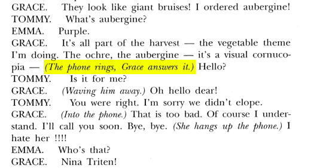

I'll be using this site to post different sound cues I'm working on for the show. I'm going to keep things in chronological order based on the script, and I'll label multiple versions of the same cue where appropriate (example below). The site should work fine on mobile, but full disclosure - your browser will download all mp3 files on the page, which could end up being 50MB+. That's all going to count against your data cap, so you might want to wait until you're on wifi.
If you've got any questions or feedback, call me at 914-261-8998 or shoot me an email at adsalberg@gmail.com.
Page 47 (click to see script) - telephone ring
 Version 1 (6/12/14)Notes: will adjust cue to suit prop. requires stop cue to be taken off actor.
NEW SOUNDS
Options for end of A1
Accentuate the Positive - Perry ComoCopyright © 2014 Adam Salberg. All Rights Reserved.